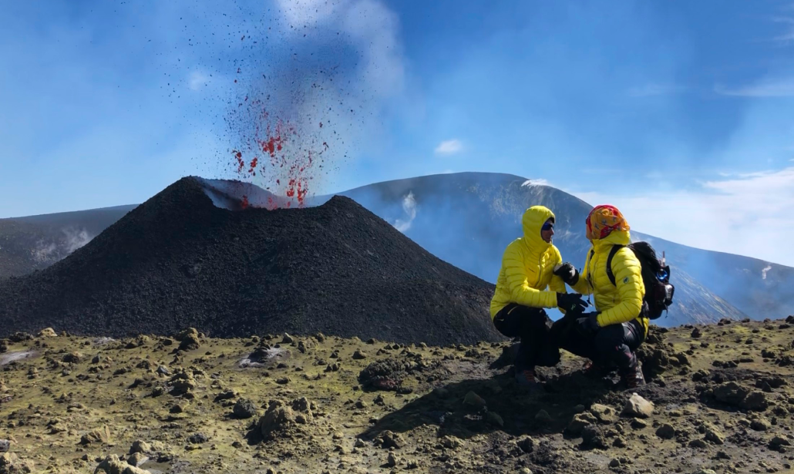

IL VULCANO
L'ETNA
L'Etna, conosciuto anche come Mongibello, è il vulcano più grande d'Europa e uno dei più attivi al mondo. Si trova nella Sicilia orientale, nella provincia di Catania, ed è delimitato a est dal Mar Ionio e dai fiumi Alcantara a nord e Simeto a sud.
La sua forma attuale è il risultato di un'evoluzione geologica che ha avuto inizio circa 500.000 anni fa con eruzioni sottomarine. Successivamente, l'attività vulcanica di tipo fessurale ha trasformato l'Etna in un "vulcano a scudo". Infine, è cresciuto verticalmente diventando uno stratovulcano, caratterizzato da strati sovrapposti di lava solidificata e ceneri vulcaniche.
L'altezza dell'Etna varia frequentemente a causa delle sue eruzioni. Nel 2021, la vetta più alta del cratere di Sud-Est ha raggiunto i 3.357 metri. La superficie del vulcano è di 1.570 km², con un diametro di base di circa 45 km e un perimetro di base di circa 212 km.
Il clima sull'Etna è molto variabile: nelle zone più alte prevale un clima di tipo alpino, con temperature medie annue che vanno dai 13-14 °C della base ai 2-3 °C della vetta. In inverno, le zone più alte sono spesso coperte di neve e soggette a forti venti.
L'Etna è anche un sito del Patrimonio dell'umanità UNESCO dal 2013, riconosciuto per il suo valore geologico e la sua biodiversità. È una destinazione popolare per il turismo e lo sport, offrendo attività come sci, escursionismo e ciclismo.
LE ERUZIONI
Nel corso degli secoli ci sono state varie eruzioni importanti:
- Eruzione del 252 d.C.: Conosciuta anche come l'eruzione di Plinio, fu accuratamente documentata dallo stesso Plinio.
- Eruzione del 1614: Questa è stata la più lunga tra le eruzioni dell'Etna documentate, durata ben 10 anni.
- Eruzione del 1669: Una delle più devastanti nella storia dell'Etna, si propagò dagli odierni Monti Rossi, al di sotto dei 1000 metri di quota.
- Eruzione del 4-5 settembre 2007: Famosa per la sua fontana di lava dall'eccezionale durata di 10 ore.
- Eruzione del 10 maggio 2008: Registrata come la più lunga colata di lava mai prodotta durante un fenomeno parossistico, con una lunghezza di 6,2 km.
Queste eruzioni rappresentano solo alcuni degli eventi più significativi che hanno contribuito a definire la personalità dell'Etna e la sua storia geologica.
MISURE DI SICUREZZA
Ricorda un elenco di misure di sicurezza da adottare in caso di eruzione dell'Etna, secondo le indicazioni della Protezione Civile:
- Informarsi sul piano d'emergenza: Conoscere il piano d'emergenza del proprio comune e le indicazioni delle autorità di protezione civile.
- Seguire le indicazioni ufficiali: Prestare attenzione esclusivamente alle comunicazioni ufficiali tramite radio, televisione, stampa quotidiana, internet e numeri verdi.
- Evitare le aree pericolose: Rispettare i divieti di accesso alle aree interessate dall'eruzione e non avvicinarsi alle zone crateriche.
- Guidare con prudenza: Essere particolarmente cauti alla guida nei tratti di strada coperti di cenere e evitare l'uso di motocicli.
- Protezione personale: Utilizzare mascherine o fazzoletti per proteggere le vie respiratorie dalla polvere vulcanica.
- Gestione delle ceneri: Non camminare sulla superficie di una colata lavica anche dopo la fine dell'eruzione e pulire accuratamente frutta e verdura ricoperte di cenere.
È importante ricordare che, in caso di eruzione, la priorità è la sicurezza personale e quella della comunità. Seguire le istruzioni delle autorità competenti può salvare vite umane.